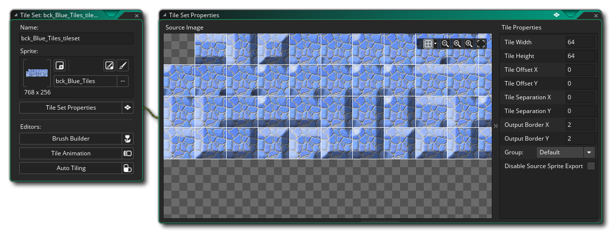
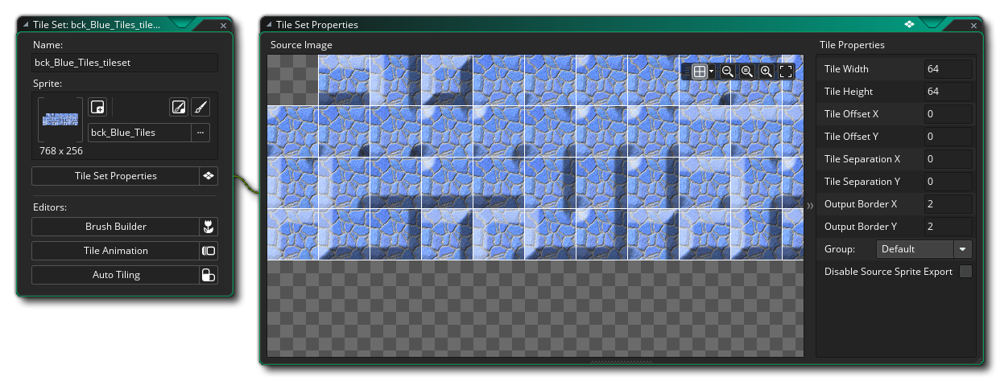

Tile Sets werden aus Sprites erstellt, aber sie werden auch als separate Ressourcen klassifiziert, da die Art und Weise, wie GameMaker Studio 2 sie behandelt, sich von Sprites und Objekten unterscheidet. Im Wesentlichen ist eine Kachel lediglich eine grafische Ressource, die mit sehr geringem CPU- / GPU-Overhead auf den Bildschirm gezogen wird. Dadurch sind sie ideal zum Entwerfen statischer Elemente in Ebenen und ein Kachelset ist eine Sammlung von Kacheln, die in einem Sprite erstellt werden. Kacheln können nur rechteckig oder quadratisch sein (wenn Sie etwas anderes als ein solches möchten, müssen Sie ein reguläres Sprite erstellen und die Asset-Ebene im Raum-Editor verwenden, auf den wir später eingehen werden). In dieser Kurzanleitung sehen wir uns ein Set an, mit dem Wände in einem Top-Down-Spiel erstellt werden können.
Zu Beginn benötigen wir ein Kachel-Set-Bild, das im Sprite-Editor / Bildeditor erstellt wird. Das fertige Sprite würde etwa so aussehen: 
Beachten Sie, dass die allererste Kachel in diesem Bild leer ist. Die Art, wie die Kachelkarte für den Raum in GameMaker Studio 2 gespeichert wird, bedeutet, dass Kachel (0) immer leer bleiben muss, da es sich im Grunde um die Kachel "Löschen" oder die Kachel "Leerraum" handelt. Wenn Sie also Ihre Karten erstellen, muss die obere linke Ecke auf diese Weise immer leer sein. Beachten Sie auch, dass das Bild oben zwar eine vollflächige Kachel mit 47 Kacheln zeigt, Sie aber möglicherweise nicht so viele brauchen, wie Sie Kacheln drehen und drehen können, wenn Sie sie später im Raumeditor platzieren.
Wenn ein Sprite erstellt wurde, können wir den Kachelsatz definieren, was bedeutet, dass Sie zuerst eine neue Kachelsatzressource erstellen müssen, indem Sie mit der rechten Maustaste klicken  den Tile Set-Ressourcenordner und wählen Sie Erstellen. Dadurch wird der Kachelsatz-Editor geöffnet, in dem Sie das Sprite hinzufügen und seine Eigenschaften festlegen können: 
den Tile Set-Ressourcenordner und wählen Sie Erstellen. Dadurch wird der Kachelsatz-Editor geöffnet, in dem Sie das Sprite hinzufügen und seine Eigenschaften festlegen können: 
Wir haben die Größe der Kacheln auf 32px festgelegt, und wir haben den Rest der Werte auf ihrem Standardwert belassen, da wir keine Offsets oder ähnliches benötigen. Sie können jetzt den Kachelset-Editor schließen, da Sie die Kachel "wie sie ist" verwenden können, um Kachelkartenebenen im Raumeditor zu erstellen. Wenn Sie mehr über die erweiterten Funktionen des Tile Set Editors erfahren möchten, lesen Sie den entsprechenden Abschnitt des Handbuchs. Nun, um Sound-Effekte für Ihr Projekt zu erstellen...